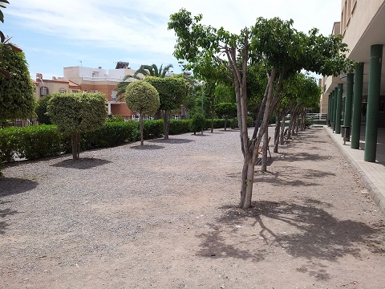
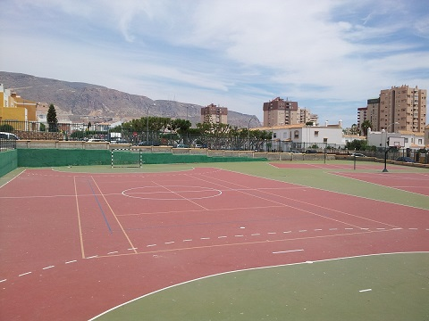
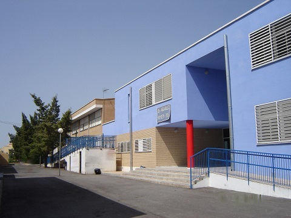
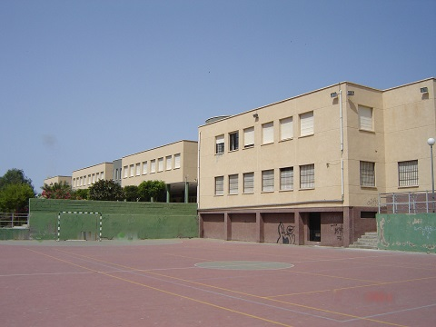

¿Quiénes somos?
El I.E.S. Aguadulce nace como una sección de I.E.S. Sabinar de Roquetas de Mar, debido al aumento de población que tuvo lugar en la década de lo 80 en esta localidad, sin edificio propio durante el curso académico 1987/88 en unos locales situados en el
edificio Las Fuentes situado en la parte de Aguadulce sur. Posteriormente, debido al alto número de alumnado matriculado, pasó a ser un centro independiente durante el curso 1990/91, pero aún faltaría año y medio para poder disponer de unas
instalaciones propias. Durante el curso académico 1991/92, el Delegado Provincial de Educación y Ciencia de la Junta de Andalucía, don Diego Écija Salto, inaugura lo que es hoy el primer edificio del instituto que posteriormente se amplia
a un segundo edificio, para cubrir la alta demanda de plazas a cubrir. En la actualidad, el centro cuenta con más de mil alumnos matriculados, repartidos en grupos de Secundaria, Bachillerato, FP Básica, FP de grado medio, FP de ciclos de
grado superior y cientos de alumnos en los ciclos formativos de formación profesional a distancia. El centro, ubicado en la calle Alhambra nº 1, está formado por dos edificios: uno más antiguo utilizado desde su inauguración, donde se encuentran
los dos niveles de Bachillerato y otro más moderno donde se ubican los distintos grupos de la E.S.O. y Formación Profesional.

Patio del centro

Pistas deportivas

Edificio ESO

Pistas
Enseñanzas del centro

- Educación Secundaria Obligatoria (ESO).
- Bachillerato.
- Formación Profesional de Grado Medio (FPGM) y de Grado Superior (FPGS) presencial.
- Formación Profesional de Grado Superior Parcial Diferenciada.
- Formación Profesional de Grado Superior a Distancia.
- Formación Profesional Básica.
Más información
En el Instituto de Educación Secundaria se imparte la Enseñanza Secundaria Obligatoria (E.S.O.) de formación obligatoria para estudiantes comprendidos entre los 12 y 16 años y varios tramos de formación postobligatoria para estudiantes de 16 a 18 años
donde se realiza el Bachillerato, formación previa para el acceso a la Universidad, un Ciclo Formativo de Grado Medio y otro de Grado Superior. En el centro las enseñanzas impartidas de Formación Profesional están relacionadas con la familia
profesional de Informática tanto en los ciclos de grado Medio (Sistemas Microinformaticos y Redes), como en el grado Superior en la modalidad de presencial (Desarrollo de Aplicaciones Web), en la modalidad de parcial diferenciada (Desarrollo
de Aplicaciones Multiplataforma) y en la modalidad de distancia (Desarrollo de Aplicaciones Web y Desarrollo de Aplicaciones Multiplataforma). También se imparten enseñanzas de FP Básica de Informática.